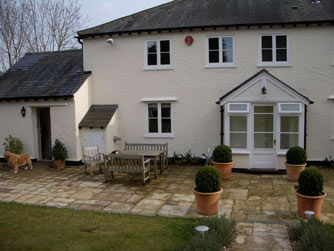
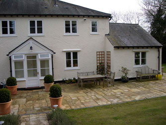
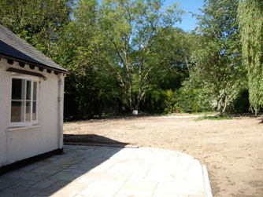
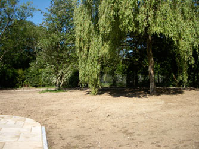
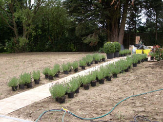
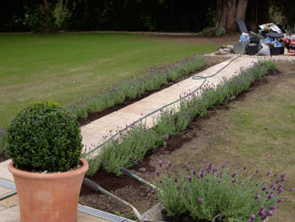
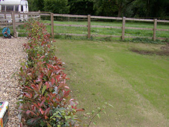
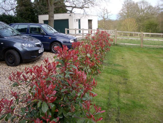
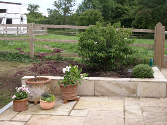
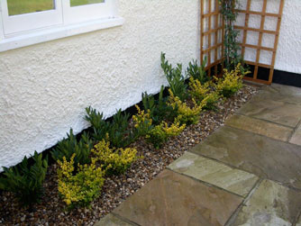

Classical shapes in a Hertford garden. The garden was a blank canvas once the building rubble had been removed. Specimen trees are retained - a weeping willow, large apple trees, several conifers - and new acers are planted. Underneath the trees a new lawn is seeded which grows quickly and provides a lush background to the garden.





Lavandula 'Fathead' makes a formal path

... and looks good against the lawn

Photinia x fraseri and Viburnum plicatum make a quick-growing hedge

after the lawn's first cut - the hedge has grown well

a specimen Viburnum mariesii underplanted with Hebe albicans and pots of acer, pelargonium and hydrangea

Prunus laurocerasus 'Otto Luyken' and Lonicera nitida 'Baggesen's Gold' soften the edges to the house